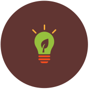
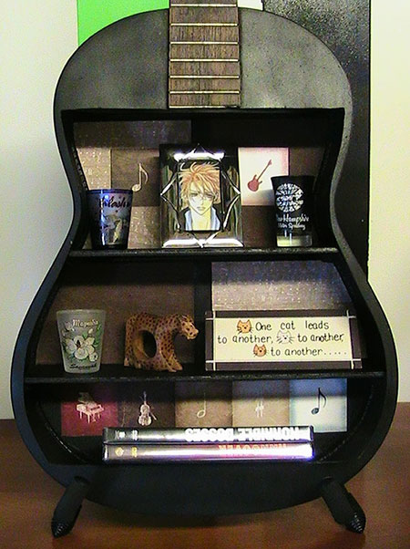

Kreiranje
Koliko puta ste se rešili starih stvari, a da pritom niste ni bili svesni da su mogle poslužiti nekoj drugoj svrsi? Trudite se da ne stvarate suvišni otpad. Sada je pravi trenutak da dobro razmislite na koje sve načine možete učiniti Vaše stvari lepim i korisnim. Preuredite svoj dom, a ujedno uštedite i sačuvajte sebe i okolinu. Ideja je na pretek. Možda baš neke od ponuđenih probude u vama stvaralački duh i nepresušnu inspiraciju. Prepustite se i uživajte.
1. Lampa od plastičnih kašika
Izvor2. Držač saksije od pet boce
Izvor3. Mozaik od delića CD-a
 Izvor
Izvor
4. Ogledalo od starog reketa
Izvor5. Viljuške kao vešalice
Izvor6. Kutija za CD-ove kao držač za kablove ili pakovanje za sendviče
Izvor7. Stari kofer kao ležaj za ljubimce
Izvor8. Ram za slike kao tacna
 Izvor
Izvor
9. Lusteri od kuhinjskog posuđa
Izvor10. Gitara kao polica
 IzvorPreporučeni linkovi
dothegreenthing.com
twistedsifter.com
boredpanda.com
facebook.com
designrulz.com
pinterest.com